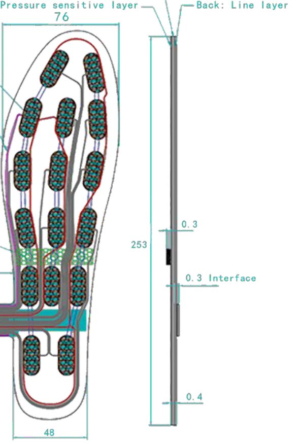

Le sujet et le capteur de la semelle
Ce TD se fait comme si c'était la première fois. Chaque étape commence par ce qu'il faut savoir, expliqué depuis zéro ; puis chaque question : ce qu'on te demande, comment on raisonne, le calcul, la réponse. Une petite vérification termine chaque étape. La correction est rédigée pour le site : aucun corrigé du professeur n'a été reçu.
Le TD en une phrase
On fabrique une semelle qui mesure avec quelle force le pied appuie, à 16 endroits, pour surveiller des patients diabétiques : chez eux, une plaie au pied peut commencer sans douleur, et une marche qui change en est souvent le premier signe.


Le TD suit la mesure, du pied jusqu'au microcontrôleur, en quatre étapes :
| Étape | La question qu'on se pose | Questions du TD |
|---|---|---|
| 1. Le capteur | combien de force peut-il mesurer ? | 1 à 3 |
| 2. Le banc de test | comment vérifier qu'il mesure juste ? | 4 à 8 |
| 3. Le montage | comment transformer sa mesure en une tension que le microcontrôleur sait lire ? | 9 à 12 |
| 4. L'acquisition | à quelle vitesse faut-il le lire ? | 13 et 14 |
Le chemin d'une mesure, que tu retrouveras à l'étape 3 :
Toutes les réponses du TD en un coup d'œil
| Question | Réponse |
|---|---|
| 1. Surface | \(260\) mm² |
| 2. Force et pression maximales | \(98{,}1\) N et \(377\) kPa |
| 3. Patient de 70 kg | non : les 2 capteurs du talon reçoivent 343 N, ils saturent |
| 4. Capteur FUTEK | 4 jauges en pont de Wheatstone ; 2 fils d'alimentation, 2 fils de mesure |
| 5. Le bon modèle | oui : 445 N, plus que les 98 N de la semelle |
| 6. Courbe Vo(P) | une droite, de 0 à 10 mV à 445 N |
| 7. Gain de l'INA128 | \(G = 445\), \(R_G \approx 113\ \Omega\) |
| 8. CMR | réjection du mode commun : garder la différence, ignorer le commun |
| 9. Modèle du capteur | \(R_0 \approx 71\) kΩ, \(\beta \approx 629\) kΩ·N |
| 10. Multiplexeur parfait | voie choisie = fil, autres voies coupées |
| 11. Entrée /E | reliée à la masse |
| 12. Tension VA | \(V_A = 0{,}275 \times (1 + 750\ \text{k}\Omega / R_{FSR})\), de 0,44 V à 2,95 V |
| 13. Cadence et débit | 3,125 ms par capteur, 5 120 bit/s |
| 14. Condensateur CF | filtre ; \(C_F \le 0{,}83\) nF, on choisit 470 pF |
Étape 1 : ce qu'il faut savoir avant
Une masse n'est pas une force.
- La masse se mesure en kilogrammes (kg) : c'est la quantité de matière.
- La force se mesure en newtons (N) : c'est ce qui appuie.
- Posée sur le sol, une masse appuie avec son poids : \(F = m \times g\), avec \(g = 9{,}81\). Un objet de 1 kg appuie avec 9,81 N.
La pression, c'est une force partagée sur une surface.
- \(P = F / S\). La même force appuie plus fort sur une petite surface : un talon aiguille fait mal, une basket non.
- Unités : force en newtons, surface en m², pression en pascals (Pa). 1 kPa = 1 000 Pa.
- Piège : 1 mm² = \(10^{-6}\) m² (un millionième de m²).
Les aires. Rectangle : longueur × largeur. Disque de diamètre \(D\) : \(\pi D^2 / 4\).
Question 1 : la surface d'un capteur
Ce qu'on te demande. Un capteur a la forme d'une gélule : deux ronds de diamètre \(D = 11\) mm, dont les centres sont à \(L = 15\) mm, reliés par une bande droite. Quelle est sa surface ?
Comment on raisonne. On coupe la gélule en morceaux simples :
- au milieu, un rectangle de 15 mm (la distance entre les centres) sur 11 mm (le diamètre) ;
- aux deux bouts, deux demi-ronds, qui font ensemble un rond entier de 11 mm.
Le calcul.
\[S = L\,D + \frac{\pi D^2}{4}\] \[S = 15 \times 11 + \frac{\pi \times 11^2}{4}\] \[S = 165 + 95{,}0\] \[S \approx 260\ \text{mm}^2\]Réponse. Environ 260 mm².
Question 2 : force et pression maximales
Ce qu'on te demande. La fiche du capteur dit qu'il mesure de 500 g à 10 kg. Quelle force maximale, en newtons ? Quelle pression maximale, en kPa ?
Comment on raisonne.
- La fiche parle en kilogrammes, parce qu'on teste le capteur en posant des masses dessus.
- On convertit la masse en force (le poids), puis on divise par la surface de la question 1, mise en m².
Le calcul.
\[F_{max} = m\,g\] \[F_{max} = 10 \times 9{,}81\] \[F_{max} = 98{,}1\ \text{N}\] \[P_{max} = \frac{F_{max}}{S}\] \[P_{max} = \frac{98{,}1}{260 \times 10^{-6}}\] \[P_{max} \approx 377\,000\ \text{Pa} = 377\ \text{kPa}\]Réponse. 98,1 N et 377 kPa. De la même façon, le seuil bas (500 g) donne 4,9 N : en dessous, le capteur ne réagit pas.
Question 3 : un patient de 70 kg
Ce qu'on te demande. Pour un patient de 70 kg, chaque capteur reste-t-il sous son maximum de 98,1 N pendant la marche ?
Comment on raisonne. On teste le pire cas, pas seulement le cas moyen. En marchant, il y a des instants où un seul pied porte tout le corps, et où seul le talon touche le sol.
Le calcul.
\[F = m\,g = 70 \times 9{,}81 = 686{,}7\ \text{N}\]- cas moyen, le poids réparti sur les 16 capteurs : \(686{,}7 / 16 \approx 43\) N, sous 98,1 N : ça va ;
- pire cas, au contact du talon, 2 capteurs portent tout : \(686{,}7 / 2 \approx 343\) N, plus de trois fois le maximum.
Réponse. Non, pas toujours : les capteurs du talon saturent (ils restent bloqués à leur valeur maximale). Ce n'est pas grave ici : le médecin veut suivre comment l'appui évolue dans le temps, pas une valeur exacte. La fiche le confirme : répétabilité de ±10 %, assez pour un suivi, pas pour une mesure précise.
Vérifie : le capteur
1. Un sac de 5 kg est posé sur un capteur. Quelle force ?
Voir la réponse
\[F = m\,g = 5 \times 9{,}81 = 49{,}05\ \text{N}\]2. La même force appuie sur une surface deux fois plus petite. Que devient la pression ?
Voir la réponse
Elle double : \(P = F / S\), et on divise par un nombre deux fois plus petit.
3. Pourquoi regarde-t-on le talon et pas la moyenne sur les 16 capteurs ?
Voir la réponse
Parce qu'un capteur doit tenir dans le pire cas. À l'attaque du talon, tout le poids passe par 2 capteurs seulement.